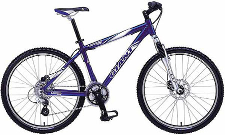

 決定要騎單車環島時，第一件事情就是去物色了一台腳踏車。 跑去附近的捷安特加盟店，跟老闆說我打算買一台好一點的腳踏車。 打算要騎去環島用的∼我的預算是六千塊左右的車款。 本來我是想買彎手把的跑車（亦稱公路車），但考慮種種因素，最後買回家的是越野車。 光是單車就花了新台幣八千元，還不包括自己額外添購的零附件。 我把輪胎從『抓地力好，但是騎乘費力』的越野胎，換成了高速較好騎的光頭胎。 又買了一個照明的前燈手電筒、警示尾燈、大鎖，還加裝了掛背包用的後座。 還買了要裝旅行用品的防水馬鞍背包，以及一個單車用碼表，能顯示時速和騎乘資訊。 全部加起來花了我一萬元整。但是非常的值得！ 無奈的是Yukon愛車在環島結束之後，某天騎到台北市華納威秀看電影時被賊人給偷走了。 現在我又買了一台FCR1，朝目標更偉大的環法努力中。 |